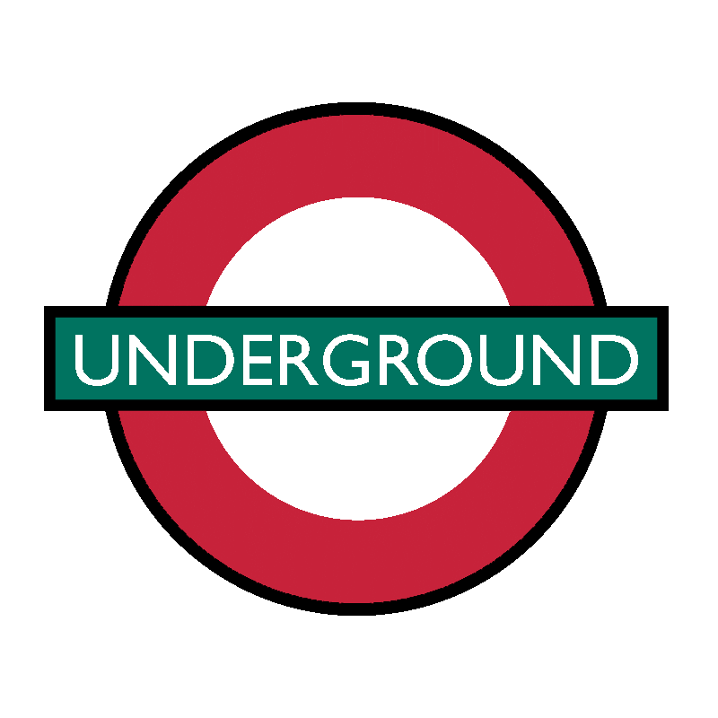

Unofficial Molecular Resident-to-Resident Guide
Disclaimer: This is an unofficial resource. When in doubt, ask the attending. If something is wrong/inaccurate, let us know.
Content
Molecular Faculty and Staff
Resident Expectations
Navigating Sharepoint
Molecular Diagnostics Lab (MDL)
MDL Call
Hematologic Molecular Algorithm (HMA)
Chromoseq
Clonoseq
FLT3
Myeloseq
Tempus
Moleclar Sendout Testing (alphabetical order)
Apolipoprotein E
Apolipoprotein L1
CYP450 family sequencing
DPYD Genotype
Huntington Disease Genetic Testing
Next Generation Sequencing (NGS)
Myeloseq
Chromoseq
Clonoseq
Cytogenetics
Gatewayseq
General Guidance
Resident Expectations
MDL Call
- Hold and answer call phone 8am-5pm.
- Manage Molecular Sendout Log (see MDL call section)
Myeloseq & Chromoseq
- Complete assigned Myeloseq and Chromoseq interpretations before signout each week.
- Myeloseq and Chromoseq signout are at 2pm on Friday.
- Cases will be assigned Monday or Tuesday and become available for interpretation Wednesday or Thursday
Presentations
- LGM Case conference: One 25 min presentation in front of all LGM. Focus on clinical case, diagnosis, and lit review.
- Heme Genomics Conference: One 25min presentation in front of Hematopathology and Molecular divisions. Focus on hematopathology topic.
- Tuesday Molecular Didactic: Two up-to-1-hour presentations in front of the molecular residents +/- fellow. The first topic will be assigned. The second you choose from the DMPP textbook.
- Beeper Report: One presentation for each week you’re on MDL call. Discussion of new acute leukemias (AML/ALL), new acute leukemia relapses, and non-hematologic sendout testing.
Navigating Sharepoint
It’s chaos y’all. Use the search bar.
Molecular Diagnostics Lab (MDL)
MDL Call
New cases appear in the ‘‘Pending’’ tab. You should click them and hit [update] button to add them to your queue. Your queue is in the ‘‘My Worklist’’ tab. Organize your worklist by sorting the cases by ‘‘Id.’’ You should address new cases 2-3 times per day and run the entire Worklist daily to check for updates. Before closing a case, if there are relevant biopsies or cytogenetics/FISH in CoPath, the attendings like these results recorded in the log. Tests that were already auto-approved do not bear thinking about, just hit the ‘‘approve’’ button and move on. It is normal for cases to drag out for several days awaiting bone marrow and FISH/cytogenetic results.
Cases will fall into three categories: Hematologic molecular algorithm (HMA), hematologic non-HMA, and non-hematologic.
- HMA cases are characterized by an HMA order. follow the instructions in the HMA for them.
- Hematologic non-HMA cases are characterized by hematologic orders such as FLT3 or Myeloseq, but no HMA order. For these you should approve if indicated by the HMA, or if not indicated by the HMA, ask the clinicians what they’re looking for and whether they’d like to change to testing indicated by the HMA. If there is no HMA order, you cannot add additional testing, so if the clinician wants it, they must order it.
- Non-hematologic cases involve miscellaneous sendout tests. These are similar to test approvals from chemistry and micro, but for the fact that we rarely say ‘‘no.’’ Information on what you should do with these may be found herein (Molecular Sendout Testing (alphabetical order)) or if you search historical cases in the call log.
Hematologic Molecular Algorithm (HMA)
Chromoseq
Clonoseq
FLT3
Myeloseq
Tempus
Molecular Sendout Testing
Apolipoprotein E
Testing laboratory: MAYO
Test ID: APOEG
Test Webpage: Link
Indication: Appropriate in individuals undergoing treatment or planning to undergo treatment with lecanemab.
Apolipoprotein L1
Testing laboratory: MAYO
Test ID: APOL1
Test Webpage: Link
Indication: Variants associated with development of kidney disease. Appropriate in African americans undergoing kidney disease workup or in individuals who will be kidney donors.
CYP450 family sequencing
DPYD Genotype
Huntington Disease Genetic Testing
Next Generation Sequencing (NGS)
Myeloseq
Dr. Hughes’ Introduction: Link
Setup Myeloreporter
Go to \\pathfiles.wustl.edu/amp/Genomics/Myeloseq_Results/Myeloreporter
Copy index.html into your browser. Bookmark this link so you can access it quickly in future.
Interpret Myeloseq
Click [Choose File]
Select from
Chromoseq
Dr. Hughes’ Introduction: Link
Clonoseq
Cytogenetics
Gatewayseq
Dr. Hughes’ Introduction: Link